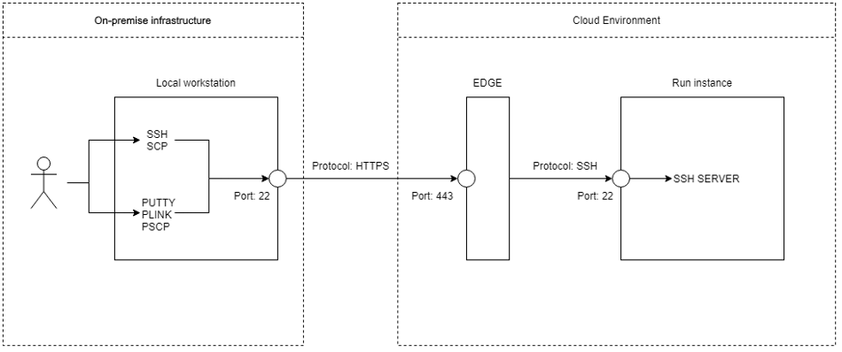
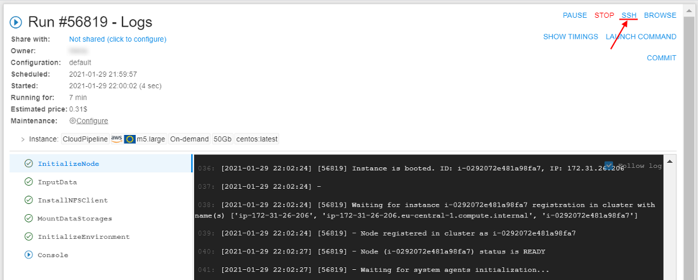
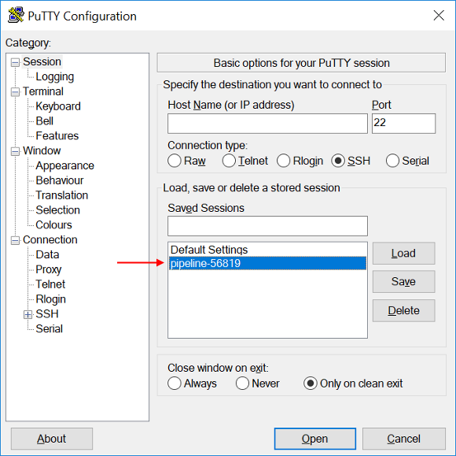
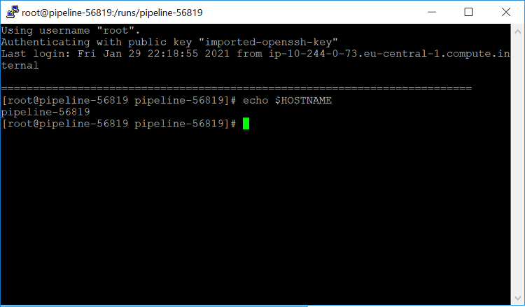
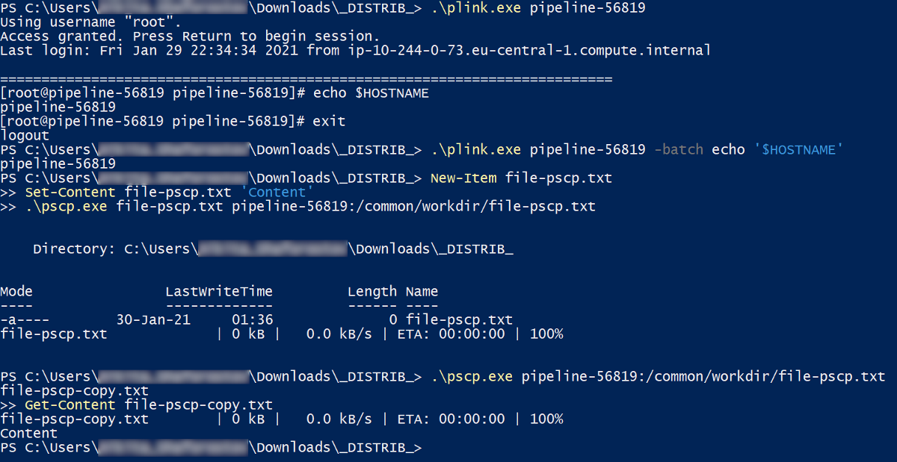
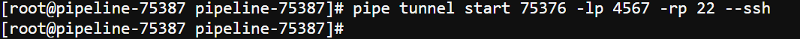
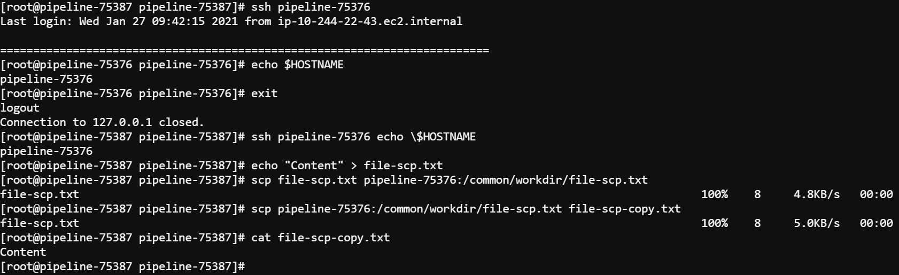

14.10. Create SSH tunnel to the running compute instance
Overview
Cloud Pipeline run instances can be accessed via SSH directly from on-premises local workstations using special network tunnels (see picture below). Such tunnels can be established between a local Windows or Linux workstation and a Cloud Pipeline run. pipe CLI provides a set of command to manage such network tunnels. Notice that pipe CLI automatically manages SSH keys and configures passwordless SSH access. As a result no manual SSH keys management is required to access Cloud Pipeline run from the local workstation.
SSH tunnels to Cloud Pipeline runs can be used for interactive SSH sessions, files transferring and third-party applications which depends on SSH protocol.

The command that runs ports tunnelling operations:
pipe tunnel COMMAND [ARGS]
Where COMMAND - one of the following commands:
start <RUN_ID>- establishes tunnel connection to specified run instance port and serves it as a local portstop <RUN_ID- stops background tunnel processes with specified run
start command possible options:
| Option | Description |
|---|---|
| Required options | |
-lp / --local-port INTEGER |
Local port to establish connection from |
-rp / --remote-port INTEGER |
Remote port to establish connection to |
| Non-required options | |
-ct / --connection-timeout FLOAT |
Socket connection timeout in seconds |
-s / --ssh |
Configures passwordless ssh to specified run instance |
-sp / --ssh-path TEXT |
Path to ".ssh" directory for passwordless ssh configuration on Linux |
-sh / --ssh-host TEXT |
Host name for passwordless ssh configuration |
-sk / --ssh-keep |
Keeps passwordless ssh configuration after tunnel stopping |
-l / --log-file TEXT |
Logs file for tunnel in background mode |
-v / --log-level TEXT |
Logs level for tunnel: CRITICAL, ERROR, WARNING, INFO or DEBUG |
-t / --timeout INTEGER |
Time period in ms for background tunnel process health check |
-f / --foreground |
Establishes tunnel in foreground mode |
-r / --retries INTEGER |
Number of retries to connect to specified pipeline run. Default is 10 |
--trace |
Enables error stack traces displaying |
stop command possible options:
| Option | Description |
|---|---|
| Non-required options | |
-lp / --local-port INTEGER |
Local port to stop tunnel for |
-t / --timeout INTEGER |
Tunnels stopping timeout in ms |
-f / --force |
Killing tunnels rather than stopping them |
-v / --log-level TEXT |
Explicit logging level: CRITICAL, ERROR, WARNING, INFO or DEBUG |
--trace |
Enables error stack traces displaying |
Usage example
Firstly, launch a tool in Cloud Pipeline. In our example we will use library/centos tool launched with default settings. How to launch a tool see here.
The launched run will be used in the following sections to establish SSH tunnels to.
When the tool is launched, open its Run logs page. Wait for the SSH hyperlink to appear. Once the SSH hyperlink appears then run is initialized and SSH tunnels can be established:

Follow to the corresponding section below to configure local workstation to be able to connect to Cloud Pipeline run via SSH.
Connect from Windows workstation
The tutorial describes how to connect to Cloud Pipeline run via SSH from Windows workstation.
Note: The tutorial requires PuTTY application being installed locally. Additionally plink.exe and pscp.exe CLI clients are used in the tutorial. Download both PuTTY, plink.exe and pscp.exe from the official site using this link: https://www.chiark.greenend.org.uk/~sgtatham/putty/latest.html.
- Open PowerShell console: press Win+R, type
powershelland press Enter - Install
pipeCLI if it is not installed yet (see details here) - Establish SSH tunnel using the command below. In the command below
56819is the Run ID of the tool run launched before this example execution,4567is just a random free local port and22is the Cloud Pipeline run SSH port. Additional--sshflag enables passwordless SSH access:
pipe tunnel start 56819 -lp 4567 -rp 22 --ssh
- Once the tunnel is established either PuTTY application or its CLI client can be used to interact with Cloud Pipeline run via SSH. Usually a name of an automatically created PuTTY session is
pipeline-<RUN_ID>. Notice that no actions later on require a password. This happens becausepipeCLI automatically manages SSH keys while configuring a network tunnel. - Open PuTTY application and double click the corresponding session to open an interactive SSH session. There may be a delay between a tunnel establishing and a session creation. In case a corresponding session is missing please try reopen PuTTY application a little bit later:
 - After double clicking the corresponding item in PuTTY an interactive SSH session appears:
 - Return to PowerShell console and use the commands below to interact with Cloud Pipeline run via SSH using PuTTY CLI clients. Notice that commands below expects plink.exe and pscp.exe executables to be in the current folder. Note: use an actual Run ID rather then the example one (
56819)
# Open an interactive SSH session
.\plink.exe pipeline-56819
# Execute a single command via SSH
.\plink.exe pipeline-56819 -batch echo '$HOSTNAME'
# Upload a local file to Cloud Pipeline run via SSH
New-Item file-pscp.txt
Set-Content file-pscp.txt 'Content'
.\pscp.exe file-pscp.txt pipeline-56819:/common/workdir/file-pscp.txt
# Download a file from Cloud Pipeline run to a local directory via SSH
.\pscp.exe pipeline-56819:/common/workdir/file-pscp.txt file-pscp-copy.txt
Get-Content file-pscp-copy.txt

After, stop the SSH tunnel and the Cloud Pipeline run using the commands below. Note: use an actual Run ID rather then the example one (56819)
pipe tunnel stop 56819
pipe stop 56819
Connect from Linux workstation
The tutorial describes how to connect to Cloud Pipeline run via SSH from Linux workstation. The tutorial requires openssh library being installed locally. It can be installed using platform's package manager.
- Install
pipeCLI if it is not installed yet (see details here) - Establish SSH tunnel using the command below. In the command below
75376is the Run ID of the tool run launched before this example execution,4567is just a random free local port and22is the Cloud Pipeline run SSH port. Additional--sshflag enables passwordless SSH access:
pipe tunnel start 75376 -lp 4567 -rp 22 --ssh
 - Once the tunnel is established either ssh or scp CLI clients can be used to interact with Cloud Pipeline run via SSH. Usually a name of an automatically created SSH host is
pipeline-<RUN_ID>. Notice that no actions later on require a password. This happens becausepipeCLI automatically manages SSH keys while configuring a network tunnel. - Use the commands below to interact with Cloud Pipeline run via SSH using openssh default clients. Note: use an actual Run ID rather then the example one (
75376)
# Open an interactive SSH session
ssh pipeline-75376
# Execute a single command via SSH
ssh pipeline-75376 echo \$HOSTNAME
# Upload a local file to Cloud Pipeline run via SSH
echo "Content" > file-scp.txt
scp file-scp.txt pipeline-75376:/common/workdir/file-scp.txt
# Download a file from Cloud Pipeline run to a local directory via SSH
scp pipeline-75376:/common/workdir/file-scp.txt file-scp-copy.txt
cat file-scp-copy.txt

After, stop the SSH tunnel and the Cloud Pipeline run using the commands below. Note: use an actual Run ID rather then the example one (75376)
pipe tunnel stop 75376
pipe stop 75376